نجارة وتصميم الخشب
Nejera wa Tasmim El Khacheb
Menuiserie sur mesure · Alger
Que souhaitez-vous visiter ?
Choisissez une ou plusieurs étapes, ou entrez librement.
نجارة وتصميم الخشب
Nejera wa Tasmim El Khacheb
Menuiserie sur mesure · Alger
Que souhaitez-vous visiter ?
Choisissez une ou plusieurs étapes, ou entrez librement.
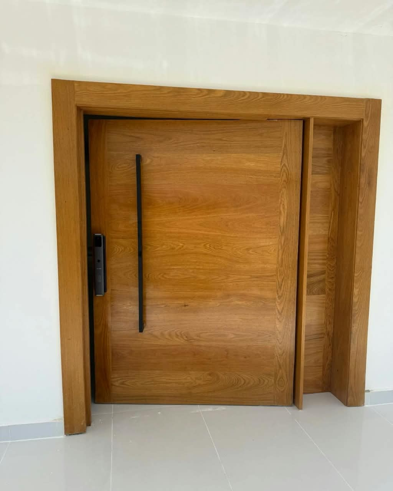
PortesEntrée, pivot, intérieures CuisinesBois massif, placage, MDF laqué
CuisinesBois massif, placage, MDF laqué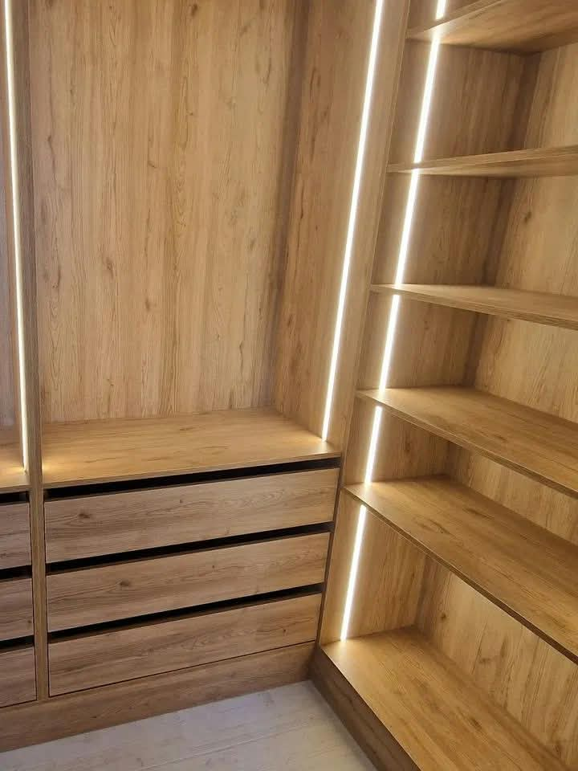
Chambres & dressingsLits, dressings, placards Agencement proMagasins, pharmacies, hôtels
Agencement proMagasins, pharmacies, hôtels Claustras & CNCSéparations, moucharabiehs
Claustras & CNCSéparations, moucharabiehs MobilierIntérieur, jardin, bois exotique
MobilierIntérieur, jardin, bois exotique ParquetBois massif, point de Hongrie
ParquetBois massif, point de Hongrie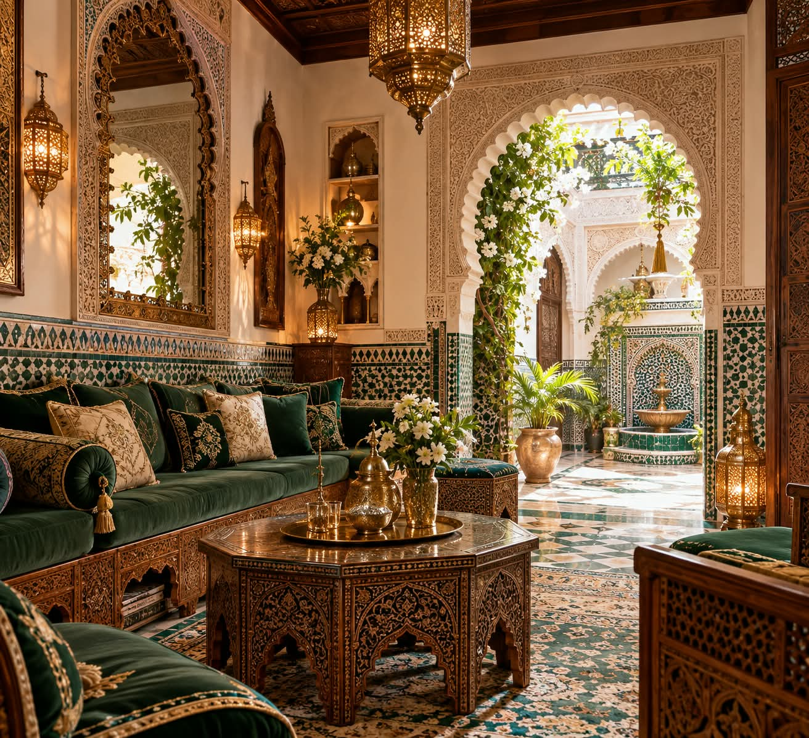
Inspirations mauresquesBois sculpté, arcs, faïenceMenuiserie sur mesure à Alger
Portes, agencements et meubles en bois massif. Dessinés avec vous, fabriqués dans notre atelier, posés par la même équipe.
Cuisine en noyer · réalisation Nejera
Table ronde, piétement en étoile
L'atelier
Nejera wa Tasmim El Khacheb est un atelier de menuiserie à Alger. Du premier rendez-vous à la dernière finition, vous gardez les mêmes interlocuteurs : relevés sur place, dessin, choix du bois, fabrication, pose.
Nous nous inspirons de ce qui nous entoure — les boiseries d'Alger-Centre, les portes de la Casbah, la géométrie kabyle — pour des intérieurs d'aujourd'hui.
Vos usages, votre lumière, vos contraintes, avant le premier trait.
Des cotes au millimètre et des assemblages faits pour durer.
Ce que nous dessinons ensemble est ce que nous posons chez vous.
الصنعة إلا ما غنات تستر
Trois familles, un même atelier


Porte vitrée à petits boisBibliothèque vitrée en chêneTable ronde, piétement en étoile
Portes d'entrée, portes intérieures, portes palières d'hôtel. Panneaux moulurés, vitrages à petits bois, chambranles sur mesure.
Bibliothèques, dressings, vaisseliers, claustras, habillages muraux. Des rangements dessinés pour la pièce, au millimètre.
Tables, buffets, commodes, consoles, chevets. Des pièces uniques, à vos dimensions.
Savoir-faire
De la porte d'entrée au parquet, de la cuisine au claustra : tout est dessiné, fabriqué et posé par la même équipe. Choisissez un métier pour voir nos réalisations.
Portes · pivot, entrée, intérieures
Chêne massif · serrure électronique
Pivot décalé, âme blindée, bois massif : des portes lourdes qui s'ouvrent d'une main. Faites tourner le cadran, ou laissez-le avancer seul.
Toutes nos portes01/ 12
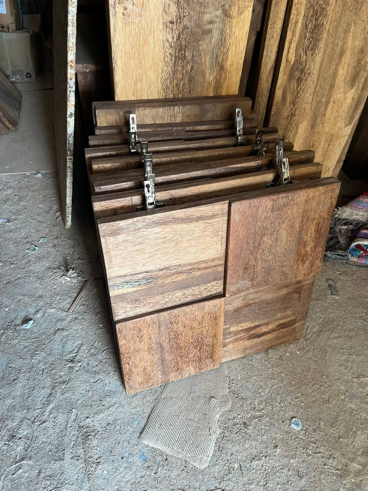
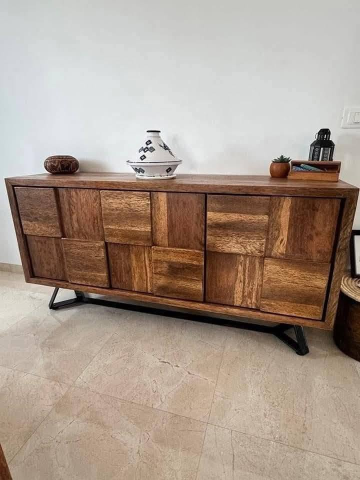
Le planÀ l'atelierChez le client
La méthode
Tout commence par une visite, chez vous ou à l'atelier. Voici le parcours d'un même buffet :
Relevés, plans, choix du bois et des finitions, validés avec vous.
Débit, assemblage, ponçage, teinte : tout est fait à la main, chez nous.
Installation, réglages, nettoyage. Nous partons quand vous êtes satisfait.

Patrimoine · en musique
Les boiseries d'Alger-Centre, les portes de la Casbah, la géométrie kabyle — réinterprétées pour aujourd'hui.
Ambiance · cuisine au zellige
Inspirations
Arcs outrepassés, moucharabiehs, façades ciselées : des pistes pour imaginer votre intérieur. Tout ce que vous voyez ici, nous savons le fabriquer.
Voir les inspirationsImages d'intention, pas des réalisations Nejera.
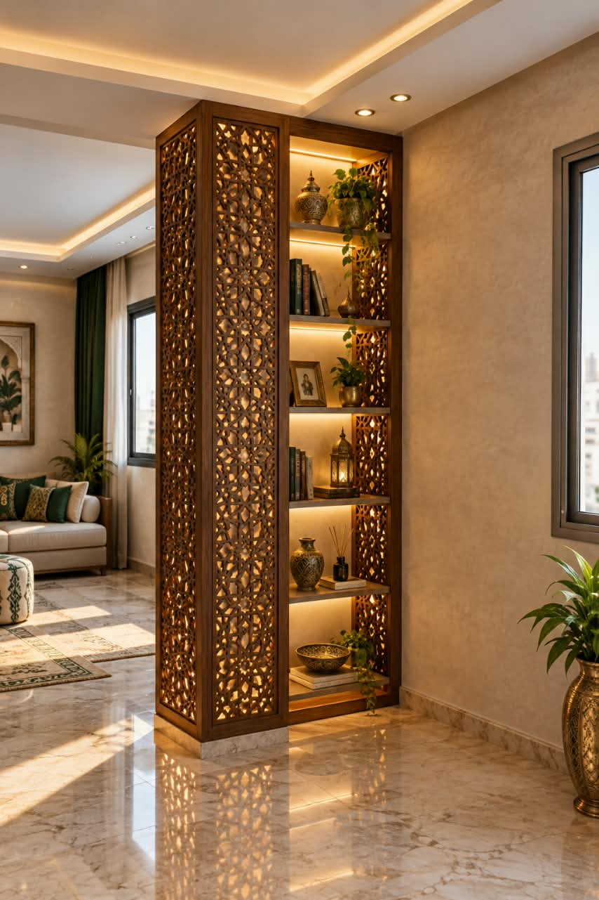
Colonne ajourée et éclairéeInspiration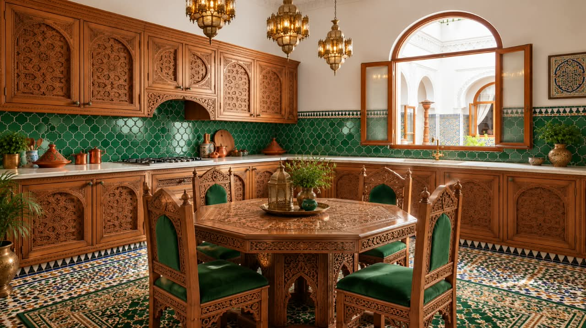
Cuisine sculptée et zellige vertInspiration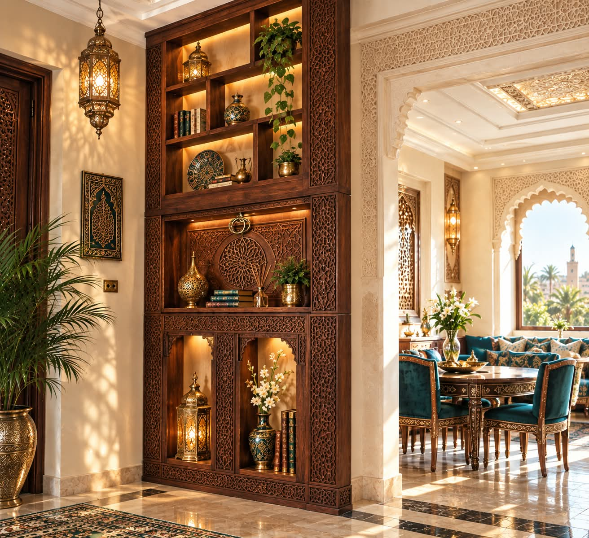
Séparation sculptée à étagèresInspiration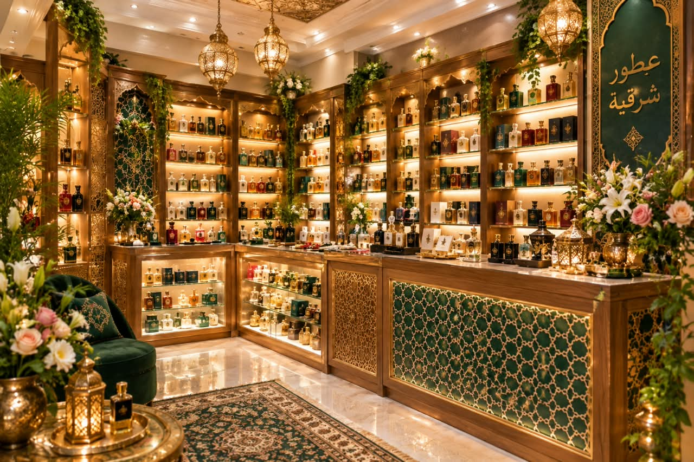
Boutique de parfums, boiseries et faïenceInspiration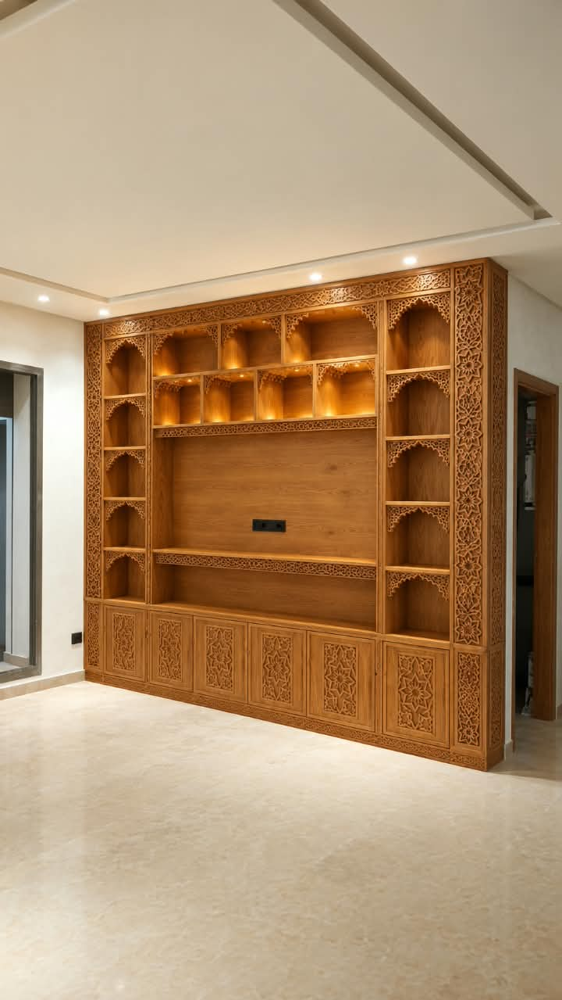
Meuble TV à arcs sculptésInspiration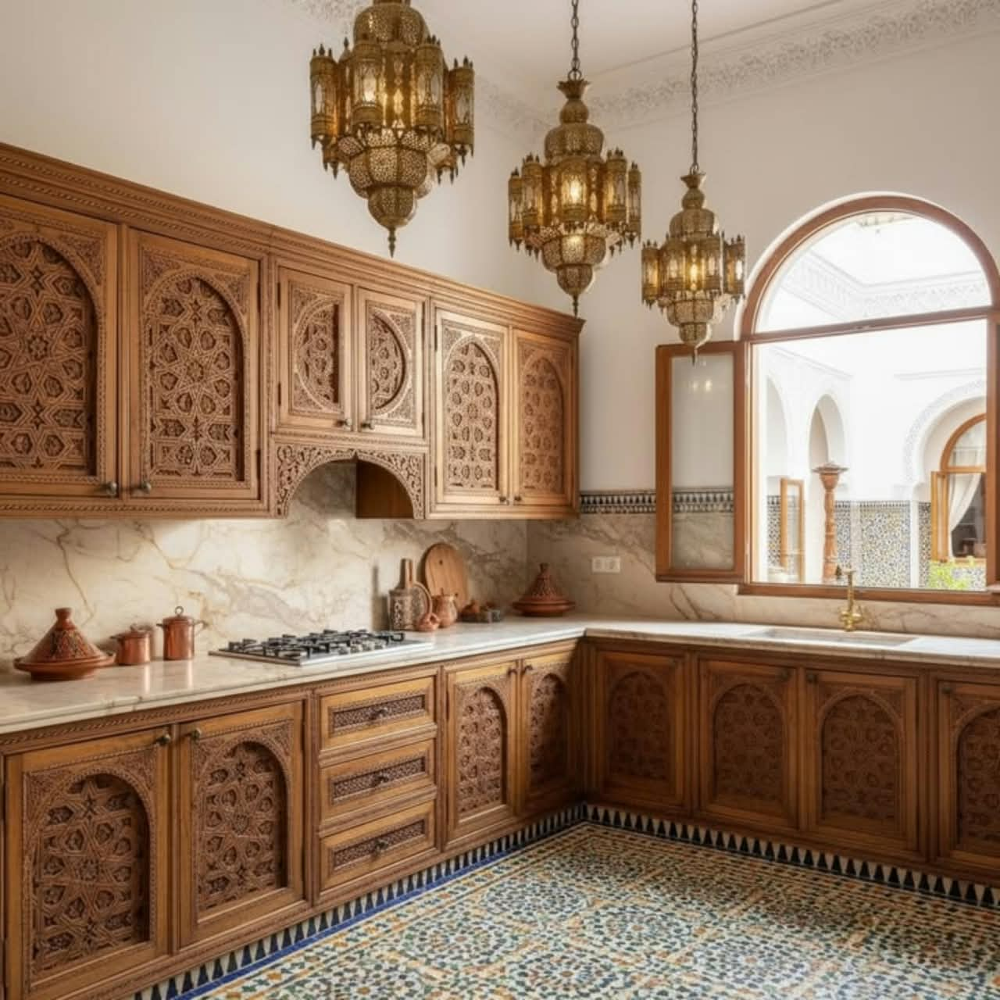
Cuisine aux portes en arcInspiration Toutes les inspirationsOuvrir la pageRéalisations
Seize ouvrages, de la porte pivot au dressing. Faites glisser les photos, ou touchez celle du centre pour l'agrandir.Cliquez sur une photo pour l'agrandir.
Réalisation · panneau arabesque
Claustras & CNC
Moucharabiehs, arabesques, motifs géométriques : la machine découpe le dessin au dixième de millimètre, la main assemble et finit. Pour séparer une pièce sans la fermer.
Claustras et CNC
Ambiance · salon aux lanternes
Pour qui
Chambres, suites, réceptions, portes palières : en série, dans les délais du chantier.
Portes, dressings, cuisines et parties communes, avec une cohérence d'ensemble.
La pièce unique : la bibliothèque d'une vie, la table de famille, le buffet qu'on transmet.
Comptoirs, linéaires, habillages muraux : des lieux qui reçoivent du public, agencés pour durer.
Nous réalisons vos plans et vous conseillons sur les essences et la faisabilité.
Rendez-vous
En cinq étapes, décrivez vos ouvrages et choisissez un créneau. Nous passons chez vous mesurer, vous conseiller sur les essences et évaluer ce qu'il faut prévoir — sans engagement.